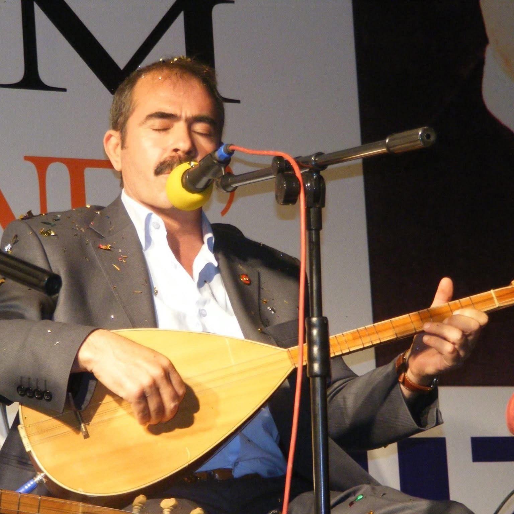

HALK OZANI · ŞAİR
Aşık Ceyhani
Durmuş Ali Sayıcı
Ceyhani aktım çağladım
Aşkıyla gönül dağladım
Doğarken bile ağladım
Yaşarken yüzüm gülmüyor
Aşık Ceyhani
13 Ocak 1964 · Ceyhan, Adana
Hatıralardan
Bir fotoğraf, bir hikâye.
02 / HATIRALAR
Ceyhani’ye Yaz
Bir selam, bir hatıra, gönlünden geçen birkaç söz…
Ziyaretçi defteri yükleniyor…
Yorumlar herkese açıktır ve HTML Comment Box hizmetinde saklanır.
Yorumları yönet ↗